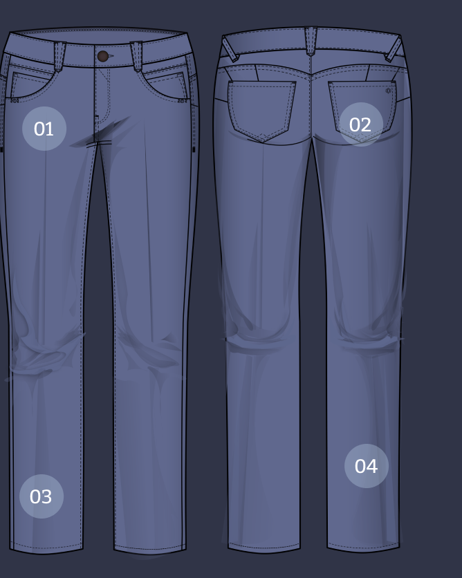

What the F?
The anatomy of Democracy Denim Constructed With “Ab”solution Fit Technology

01 Function
Function refers to the upper block of the jean – the area from your waist to your hips. This determines your size.
Examples: Mid-rise, High-rise, Skyrise, etc.
EXPLORE FUNCTION
02 Fashion
Fashion refers to the leg shape.
Examples: Skinny, Boot Cut, Straight Leg, Fray Hem, Flare, Etc.
EXPLORE FASHION
03 Features
Features refer to the details that are part
of the construction of the jean
that add distinct personality and character to each style.
Examples: Belt Loops, Pockets, Hem Details, Darts, Back Yoke, etc.
EXPLORE FUNCTION
04 Finish
Finish refers to the components that contribute to the look and feel of a style.
Examples: Wash, Thread Color, Hardware, Destruction, etc.
EXPLORE FINISHES